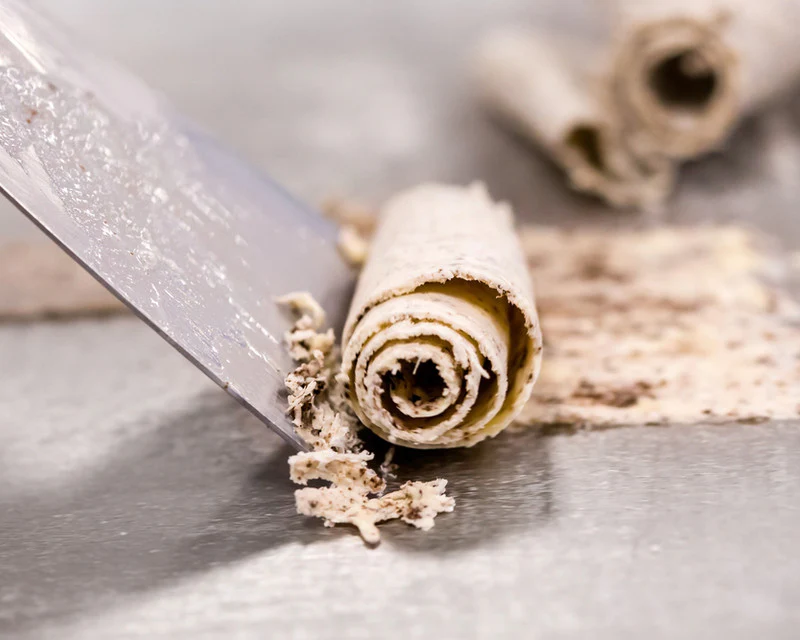
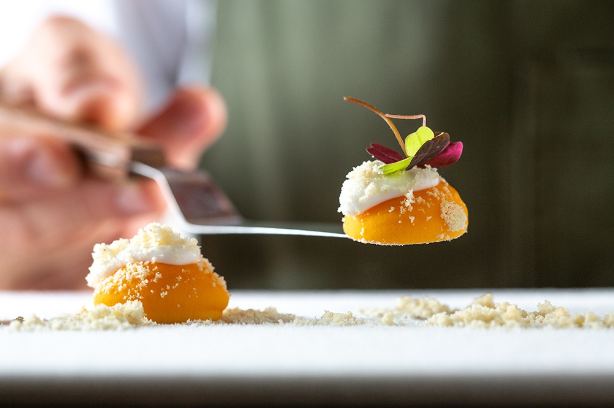

Almost every chef is familiar with the griddle - the flat metal surface that generates even controlled heat. As a chef, you likely turn to the griddle to saute onions, churn out stacks of pancakes, and cook burgers.
However, you may not be familiar with the griddle's cold cousin, the anti-griddle. This device pumps refrigerant to generate an extremely cold surface - as low as -30 degrees Fahrenheit. This cold surface flash freezes sauces, foams, and purees into a solid or semi-solid state. In less than 90 seconds, the anti-griddle can transform liquids into morsels with crunchy outer shells and cool, creamy centers.
Often used in molecular gastronomy, the anti-griddle was dreamt up by the team at the famous Chicago restaurant Alinea. They collaborated with innovators at PolyScience to come up with this new piece of cooking equipment.
Even if you don't have access to an anti-griddle, you can still play around with flash-freezing by using liquid nitrogen. With a temperature of -320 degrees Fahrenheit, this material quickly freezes food and reduces water content, allowing chefs to create powdered oils and frozen foams.
For example, various frozen desserts, such as frozen mousse or cake slices, can be made using the Anti-Griddle. The rapid freezing technique retains the dessert's delicate texture while creating an interesting surface texture.The features are make icy exterior with a delicate, creamy interior, create visually appealing and texturally unique desserts.
